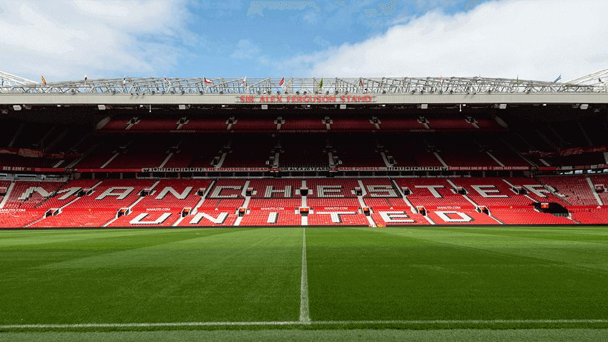
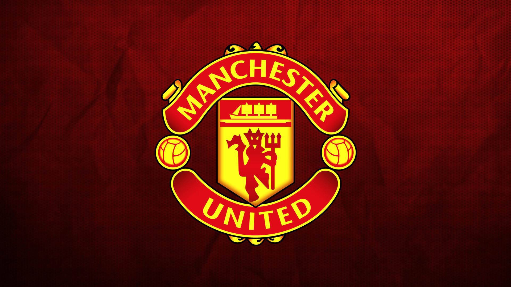
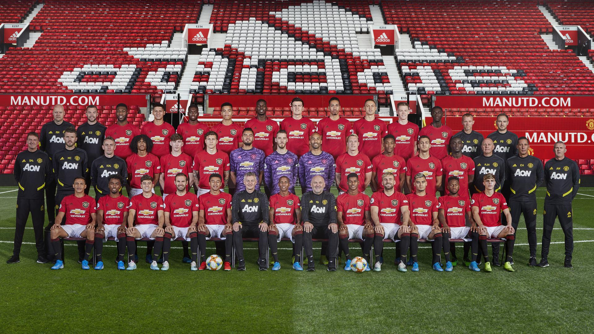

01
History
From Newton Heath to the Treble — 140 years of football history told era by era.
Read History →Est. 1878 · Old Trafford · Manchester, England
From the coal yards of Newton Heath to the Theatre of Dreams — the story of the most decorated club in English football history.
Explore the Legacy →The Club
Manchester United Football Club is one of the most recognised and supported sports organisations in the world. With over 20 league titles, 3 European Cups, and generations of legendary players, United's story is one of triumph, tragedy, reinvention, and unbreakable spirit.
This site explores every dimension of that story — from the Busby Babes to the Treble winners, from the Theatre of Dreams to the tactical genius that made it all possible. Whether you're a lifelong Red or just discovering the club, this is where the story begins.

Old Trafford · Manchester, England · Capacity 74,879

The devil on the badge is no accident. United play with a ferocity, a belief, and an identity that has defined English football for over a century.
Explore
From Newton Heath to the Treble — 140 years of football history told era by era.
Read History →Best. Charlton. Cantona. Keane. Ronaldo. The players who made Old Trafford legendary.
Meet the Legends →20 league titles. 3 European Cups. 12 FA Cups. The most decorated club in England.
See the Honours →From Busby's 4-2-4 to Ferguson's 4-2-3-1 — how United's identity was built.
Explore Tactics →The greatest thing about Manchester United is the players always want to play for the badge.
— Sir Alex Ferguson

The Squad
Every player who pulls on the red shirt carries the weight of history. The expectation at Manchester United is unlike anywhere else in world football — to win, to entertain, and to represent something bigger than the game itself.
This team photo captures a squad mid-dynasty at Old Trafford — the stadium that has witnessed more drama, more heartbreak, and more glory than any other ground in English football.